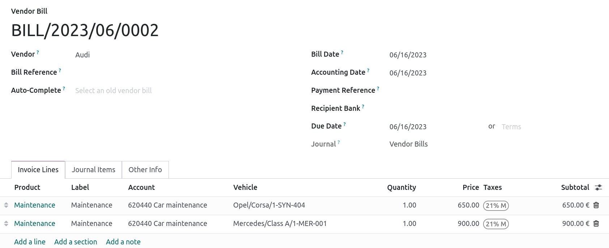

Belgium¶
Configuration¶
Install the following modules to get all the features of the Belgian localization, following the IFRS rules.
Name |
Technical name |
Description |
|---|---|---|
Belgium - Accounting |
|
Default fiscal localization package. |
Belgium - Accounting Reports |
|
Access to specific accounting reports for Belgium. |
Belgium - Accounting Reports (post wizard) |
|
Enables the VAT wizard when posting a tax return journal entry. |
Belgium - Import Bank CODA Statements |
|
Import CODA bank statements. |
Belgium - Import SODA files |
|
Import SODA files. |
Belgium - Disallowed Expenses Data |
|
Access to the use of disallowed expenses features. |
Belgium - Payroll |
|
Access to the basic payroll features for Belgium. |
Belgium - Payroll with Accounting |
|
Integration of accounting data with payroll. |
Belgium - Payroll - Dimona |
|
Access to Dimona features for payroll. |
Belgium - Payroll - Fleet |
|
Fleet features for payroll. |
Salary Configurator (Belgium) |
|
Access to the salary configurator feature. |
Chart of accounts¶
You can reach the Chart of accounts by going to .
The Belgian chart of accounts includes pre-configured accounts as described in the PCMN. To add a new account, click New. A new line appears. Fill it in, click Save, and then Setup to configure it further.
See also
Taxes¶
Default Belgian taxes are created automatically when the Belgium - Accounting and the Belgium - Accounting Reports modules are installed. Each tax impacts the Belgian Tax Report, available by going to .
In Belgium, the standard VAT rate is 21%, but there are lower rates for some categories of goods and services. An intermediate rate of 12% is applied on social housing and food served in restaurants, while a reduced rate of 6% applies to most basic goods, such as food, water supply, books, and medicine. A 0% rate applies to some exceptional goods and services, such as some daily and weekly publications, as well as recycled goods.
Non-deductible taxes¶
In Belgium, some taxes are not fully deductible, such as taxes on the maintenance of cars. This means a part of these taxes is considered as an expense.
In Odoo, you can configure non-deductible taxes by creating tax rules for these taxes and linking them to the corresponding accounts. This way, the system automatically calculates the taxes and allocates them to the appropriate accounts.
To configure a new non-deductible tax, go to , and click New:
Add a line and select Base in the Based On column;
Add a line, then select on tax in the Based on column and enter the non-deductible percentage in the % column;
On the of tax line, select the Tax Grid(s) related to your tax;
Add a line with the deductible percentage in the % column;
Set of tax in Based On;
Select 411000 VAT recoverable as account, and select the related tax grid.
Once you have created a non-deductible tax, you can apply it to your transactions by selecting the appropriate tax during the encoding of bills and credit notes. The system automatically calculates the tax amount and allocates it to the corresponding accounts based on the tax rules configured.
Example
With the Belgian localization, the 21% car tax is created by default (50% non-deductible).

See also
Reports¶
Here is the list of Belgian-specific reports available:
Balance sheet;
Profit & loss;
Tax report;
Partner VAT Listing;
EC Sales List;
Intrastat.
You can access Belgian-specific versions of reports by clicking on the book icon when on a report and selecting its Belgian version: (BE).

See also
Disallowed expenses report¶
Disallowed expenses are expenses that can be deducted from your accounting result but not from your fiscal result.
The disallowed expenses report is available by going to . It allows financial results in real-time, and periodic changes. This report is generated based on the disallowed expenses categories that you can reach by going to . Some categories already exist by default but do not have any rates. Click on Set Rates to update a specific category.
Tip
You can add multiple rates for various dates. In that case, the rate used to calculate the expense depends on the date at which it is calculated, and the rate set for that date.
If you have the Fleet app installed, tick the Car Category box when applicable. This makes the vehicle mandatory while booking a vendor bill.
To link a disallowed expenses category with a specific account, go to . Find the account you want, and click on Setup. Add the Disallowed Expense category in the Disallowed Expenses field. From now, when an expense is created with this account, the disallowed expense is calculated based on the rate mentioned in the Disallowed Expense category.
Let’s take an example reflecting restaurant and car expenses.
Restaurant expenses¶
In Belgium, 31% of restaurant expenses are non-deductible. Create a new disallowed expenses category and set both Related Account(s) and Current Rate.

Car expenses: vehicle split¶
In Belgium, the deductible percentage varies from car to car and, therefore, should be indicated for each vehicle. To do so, open and select a vehicle. In the Tax info tab, go to the Disallowed Expenses Rate section and click on Add a line. Add a Start Date and a %. The amounts go in the same account for all car expenses.
When you create a bill for car expenses, you can link each expense to a specific car by filling the Vehicle column, so the right percentage is applied.
The vehicle split option available in the disallowed expenses report allows you to see the rate and disallowed amount for each car.

Fee form 281.50 and form 325¶
Fee form 281.50¶
Annually, a 281.50 fee form must be reported to the fiscal authorities. To do so, the tag
281.50 must be added on the contact form of the entities concerned by the 281.50 fee. To
add the tag, open , select the person or company you want to create a
281.50 fee form for, and add the 281.50 tag in the Tags field.

Note
Make sure the street, zip code, country, and VAT number are also informed on the Contact form.
Then, depending on the nature of the expense, add the corresponding 281.50 tag on the impact
accounts. To do so, go to , and click on Setup to add the corresponding 281.50 tag on the impacted
accounts, i.e., 281.50 - Commissions, depending on the nature of the expense.
Form 325¶
You can create a 325 form by going to . A new page pops up: select the right options and click Generate 325 form. To open an already generated 325 form, go to .

CODA and SODA statements¶
CODA¶
CODA is an electronic XML format used to import Belgian bank statements. You can download CODA files from your bank and import them directly into Odoo by clicking Import Statement from your Bank journal on your dashboard.

Note
The Belgium - Import Bank CODA Statements module is installed by default when the Belgium - Accounting and the Belgium - Accounting Reports modules are installed.
See also
SODA¶
SODA is an electronic XML format used to import accounting entries related to salaries. SODA files can be imported into the journal you use to record salaries by going to your Accounting dashboard and clicking Upload in the related journal card form.
Once your SODA files are imported, the entries are created automatically in your ‘salary’ journal.

Electronic invoicing¶
Odoo supports the E-FFF and Peppol BIS Billing 3.0 (UBL) electronic invoicing formats. To enable them, go to , and tick E-FFF (BE) and Peppol BIS Billing 3.0.
See also
Cash discount¶
In Belgium, if an early payment discount is offered on an invoice, the tax is calculated based on the discounted total amount, whether the customer benefits from the discount or not.
To apply the right tax amount and report it correctly in your VAT return, set the tax reduction as Always (upon invoice).
See also
Fiscal certification: POS restaurant¶
In Belgium, the owner of a cooking business such as a restaurant or food truck is required by law to use a government-certified Cash Register System for their receipts. This applies if their yearly earnings (excluding VAT, drinks, and take-away food) exceed 25,000 euros.
This government-certified system entails the use of a certified POS system, along with a device called a Fiscal Data Module (or black box) and a VAT Signing Card.
Important
Do not forget to register as foodservice industry manager on the Federal Public Service Finance registration form.
Certified POS system¶
The Odoo POS system is certified for the major versions of databases hosted on Odoo Online and Odoo.sh. Please refer to the following table to ensure that your POS system is certified.
Odoo Online |
Odoo.sh |
On-Premise |
|
|---|---|---|---|
Odoo 16.0 |
Certified |
Certified |
Not certified |
Odoo 15.2 |
Not certified |
Not certified |
Not certified |
Odoo 15.0 |
Certified |
Certified |
Not certified |
Odoo 14.0 |
Certified |
Certified |
Not certified |
See also
/administration/supported_versions
A certified POS system must adhere to rigorous government regulations, which means it operates differently from a non-certified POS.
On a certified POS, you cannot:
Set up and use the global discounts feature (the
pos_discountmodule is blacklisted and cannot be activated).Set up and use the loyalty programs feature (the
pos_loyaltymodule is blacklisted and cannot be activated).Reprint receipts (the
pos_reprintmodule is blacklisted and cannot be activated).Modify prices in order lines.
Modify or delete order lines in POS orders.
Sell products without a valid VAT number.
Use a POS that is not connected to an IoT box.
The cash rounding feature must be activated and set to a Rounding Precision of
0,05and a Rounding Method set as Half-Up.Taxes must be set as included in the price. To set it up, go to , and from the Accounting section, open the Default Sales Tax form by clicking the arrow next to the default sales tax field. There, click Advanced Options and enable Included in Price.
At the start of a POS session, users must click Work in to clock in. Doing so allows the registration of POS orders. If users are not clocked in, they cannot make POS orders. Likewise, they must click Work Out to clock out at the end of the session.
Warning
If you configure a POS to work with a FDM, you cannot use it again without it.
Fiscal Data Module (FDM)¶
An FDM, or black box, is a government-certified device that works together with the Point of Sale application and saves your POS orders information. Concretely, a hash (unique code) is generated for each POS order and added to its receipt. This allows the government to verify that all revenue is declared.
Warning
Only the FDM from Boîtenoire.be with the FDM certificate number BMC04 is supported by Odoo. Contact the manufacturer (GCV BMC) to order one.
Configuration¶
Before setting up your database to work with an FDM, ensure you have the following hardware:
a Boîtenoire.be (certificate number BMC04) FDM;
an RS-232 serial null modem cable per FDM;
an RS-232 serial-to-USB adapter per FDM;
an IoT Box (one IoT box per FDM); and
a receipt printer.
Black box module¶
As a pre-requisite, activate the Belgian Registered Cash Register module
(technical name: pos_blackbox_be).

Once the module is activated, add your VAT number to your company information. To set it up, go to , and fill in the VAT field. Then, enter a national registration number for every staff member who operates the POS system. To do so, go to the Employees app and open an employee form. There, go to , and fill in the INSZ or BIS number field.

Tip
To input your information, click on your avatar, go to , and enter your INSZ or BIS number in the designated field.
Warning
You must configure the FDM directly in the production database. Utilizing it in a testing environment may result in incorrect data being stored within the FDM.
IoT Box¶
In order to use an FDM, you need a registered IoT Box. To register your IoT box, you must contact us through our support contact form and provide the following information:
your VAT number;
your company’s name, address, and legal structure; and
the Mac address of your IoT Box.
Once your IoT box is certified, connect it to your database. To verify that the IoT Box recognizes the FDM, go to the IoT homepage and scroll down the IOT Device section, which should display the FDM.

Then, add the IoT to your POS. To do so, go to , select your POS, scroll down to the Connected Device section, and enable IoT Box. Lastly, add the FMD in the Fiscal Data Module field.
Note
To be able to use an FDM, you must at least connect one Receipt Printer.
VAT signing card¶
When you open a POS session and make your initial transaction, you are prompted to enter the PIN provided with your VSC. The card is delivered by the FPS upon registration.